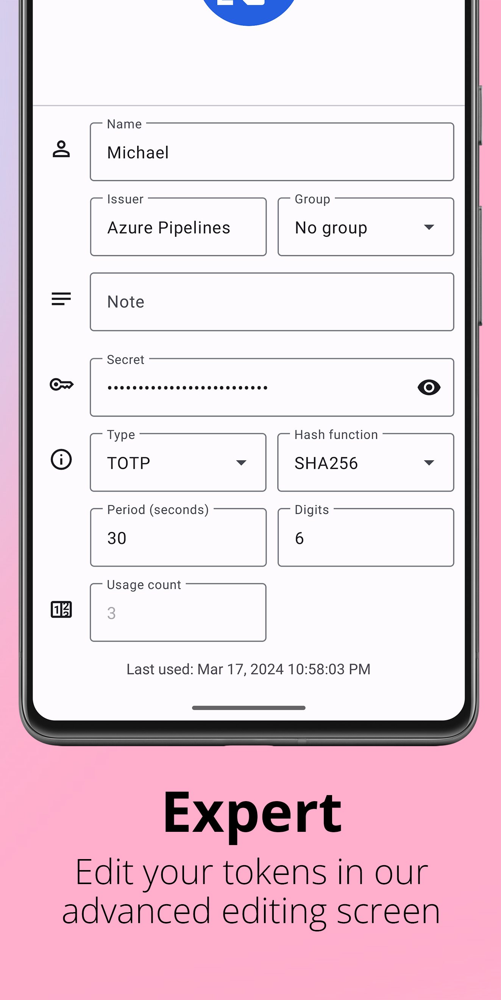

Aegis 深度盘点：一款开源验证码管理器到底藏了多少细节
从加密架构、导入迁移到社区图标包，全面梳理 Aegis 这款开源 Android 2FA 验证器的能力边界与务实取舍，帮你判断它是不是你的菜。
Aegis官网 是一款开源的 Android 双因素认证（2FA）验证器。如果你之前用过 Google Authenticator、Authy 或者微软验证器，大概知道这类软件长什么样——扫二维码、生成 6 位数字、每隔 30 秒刷新一次。但 Aegis 的玩法不止于此：它把所有验证码装进一个加密文件，把加密算法、密钥派生、文件格式全部写进 Aegis文档，社区围着它做图标包、修兼容性、提 issue。把这些放在一起看，它已经不是一个简单的「验证码生成器」，而是一套完整的本地安全管理方案。
安全架构不是口号，是每层都能对上号的设计
很多验证器会说「我们用了强加密」，但很少有把加密细节、密钥层级、文件格式全部公开的。Aegis 敢这么做，本身就是一件值得认真对待的事。
它的核心机制叫「保险库（vault）」——所有条目，包括密钥、服务名、账号名、图标、分组，全部打包成一个文件。你在应用里做的每次增删改，本质上都是对这个文件的更新。备份就是复制这个文件，换机迁移就是把文件搬到新手机再导入，加密就是给这个文件上锁。概念简单清晰，但背后的加密设计相当扎实。
保险库内容用 AES-256-GCM 整体加密。AES-256 是当前主流对称加密标准，GCM 模式的厉害之处在于它在加密的同时生成完整性校验标签——文件被篡改过一个字节，解密时就会报错，而不是解出一堆乱码。密码不是直接当密钥用的，要先经 scrypt 反复运算派生出真正的密钥。scrypt 刻意消耗大量内存，让暴力试密码的成本急剧上升，它使用的参数（N=32768、r=8、p=1）与 Android 系统自身全盘加密一致，是移动设备内存条件下相当扎实的选择。
更有意思的是密钥的层级设计。创建保险库时随机生成一把 256 位的主密钥，真正加密数据的是它。你的密码经 scrypt 派生出另一把密钥，用来「包裹」主密钥。如果开启了生物识别，Android 系统安全芯片（Keystore）里会再生成一把受指纹门禁保护的密钥，同样包裹一份主密钥。每个包裹副本称为一个「槽位（slot）」，设计和磁盘加密领域的 LUKS 槽位机制同源——多把钥匙都能开同一把锁，日常用指纹秒开，密码则是永远有效的备用钥匙。代价也明确：安全性取决于最弱的那个凭证，密码太弱，生物识别再强也白搭。

这套设计还有一个直白的推论：忘记密码无法找回不是客服话术，而是数学事实——没有任何后端能帮你解锁那份 AES-256-GCM 文件。对于看重本地优先的用户来说，这既是安全感也是压力感，取决于你备份做得怎么样。
导入迁移：务实的边界感
从别的验证器迁过来是很多人的第一道坎。Aegis 在这方面的态度很务实——兼容的努力做到位，不兼容的坦诚说清楚。
它支持从 Google Authenticator、FreeOTP、2FAS、Proton Authenticator、Ente Auth 等主流来源导入，导入方式包括扫二维码、纯文本粘贴、文件导入等。但兼容性不是一蹴而就的：Authenticator Plus 的 .db 格式不被支持，必须用「导出为文本和 HTML」路径；Google Authenticator 旧版 iOS 生成的导出码有过无法被扫的问题（3.3 版才修）；FreeOTP 条目缺省算法/位数字段导致的失败（3.4 版修复）；2FAS 密钥含空格导致服务名提取失败（3.3.3 版修复）。几乎每一次版本更新都在改善兼容性，从发布记录看，导入支持是持续迭代的高频区域。
对于 Authy、微软验证器这类没有官方导出通道的应用，它也不绕弯子——不是报错，是没有官方入口，需要 root 直读或逐服务重绑。这种「能做什么、不能做什么」都摆上台面的做法，反而让人更放心。
社区驱动的个性化：图标包是亮点也是教训
Aegis 本身不提供官方图标包，但维护了一份社区项目的推荐列表。目前主力的社区图标包有四个：aegis-icons（单色圆形风格，覆盖服务最多）、delta-aegis-icons（Delta Icons 风格变体）、aegis-simple-icons 和 aegis-simple-icons-outlined（基于 Simple Icons 项目自动生成，部分图标质量不如手工维护的版本）。安装流程也简单：从项目主页下载图标包文件，在应用设置里导入，之后给任何条目换图标时都能从包里直接挑现成的。
但这里有一个值得认真对待的安全教训：3.4.3 版修复过一个严重问题——恶意构造的图标包文件可能覆盖应用内部文件，包括保险库文件本身。这个事件的积极面是问题被及时公开并修复，消极面是它提醒我们第三方社区内容不是银弹，只安装可信来源的图标包、保持应用在新版本是基本操作。
好消息是自制图标包的门槛不高，格式公开，想给自己在用的冷门服务补图标，可以照着官方文档做一份自己的。
短板也要说
说了这么多优点，几个硬边界不能不提。
首先是 Android 专属。生物识别依赖 Android Keystore，整个应用建立在 Android 的安全模型之上，iOS 上没有，桌面端也没有。如果你是苹果全家桶用户，这一条就直接排除了它，不过 Android 用户可以直接从下载页面拿到安装包。
其次是导入兼容性的硬边界。Authy、微软验证器没有官方导出通道，意味着从这些应用迁出需要额外操作——root 设备或者逐服务重绑。虽然坦诚总比隐瞒好，但迁移成本确实存在。
第三是单一文件存储的双刃剑。一个文件装下所有密钥的好处是简单、清晰、容易备份；坏处是备份这件事完全靠自觉——应用默认存在私有存储目录，卸载即删除，不做手动或自动备份的话，手机一丢就是全部重来。
最后，社区生态虽然活跃但规模不算大。图标包质量参差不齐，自制图标包的文档虽然公开但仍有一定技术门槛，和 Google Authenticator 这种巨无霸级的生态覆盖面没法比。
什么样的人该用它
综合下来，三类人群最适合：
第一类，对本地优先和加密透明有要求的个人用户。AES-256-GCM + scrypt 的组合扎实，密钥层级设计清晰，加密细节全部公开可查，不依赖任何云端服务。如果你不想把验证码交给任何第三方托管，Aegis 是当前 Android 上最扎实的选择之一。
第二类，正在从其他验证器迁出的迁移者。多来源导入支持、版本持续迭代改善兼容性、对不兼容的坦诚说明——这些都降低了迁移门槛。特别是从 Google Authenticator 迁出的用户，Aegis 对其导出码的支持已经相当成熟。
第三类，喜欢折腾个性化的玩家。社区图标包提供了批量换图标的能力，开放格式允许自制图标包，如果你对「每个服务都要有对应的品牌图标」这件事有执念，Aegis 的可玩性比 Google Authenticator 高得多。
总的来说，Aegis 不是功能堆得最多的验证器，也不是界面最花哨的那个，但它在安全架构、导入兼容性和社区开放这三件事上做得相当扎实。对追求本地安全、愿意花一点时间理解加密设计的用户来说，它值得认真试一试。这些整理好的资料在 GitHub、Gitee、GitCode 上都有同步，选你访问顺手的那个就行。